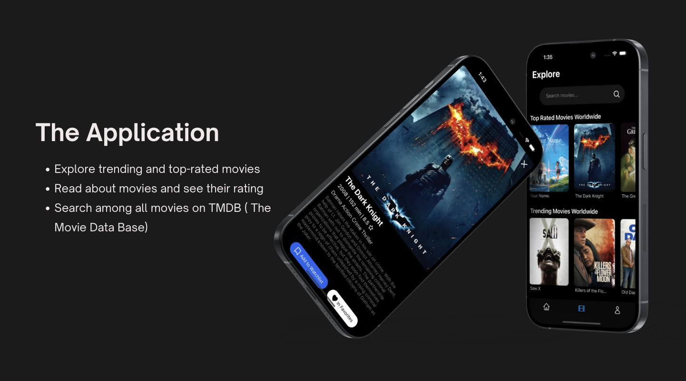
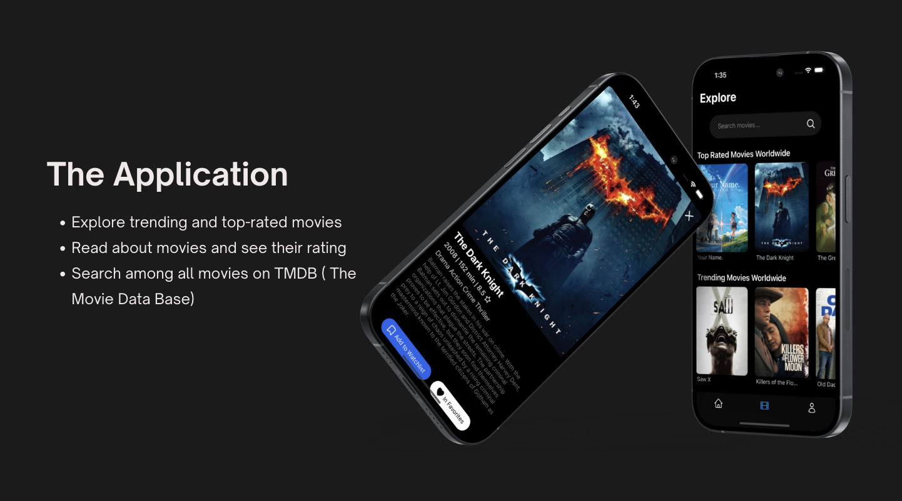

MovieTalk
Project Overview
As part of the course Advanced Interaction Programming at The Royal Institute of Technology, me and two team mates developed a mobile app for sharing and saving movie recommendations in a social feed. The course focuses on developing full-stack web applications with high usability, and exploring new technologies. Having some previous experience of web development, we wanted to explore something new and learn how to build a mobile app. Our final tech stack resulted in the framework React Native for setup, Firebase and Firestore for user authentication and data storage, and Javascript and Tailwind CSS for coding and styling.
The Idea
The concept emerged from the shared challenge of navigating the movie-selection dilemma. With a multitude of movie suggestions scattered across different notes on our phones, without details like descriptions, ratings, or streaming information, the process of choosing a movie was often time-consuming. When researching the market, it became clear that no existing app provided seamless sharing, discussing, and saving of movie recommendations in one place. Consequently, we took on the mission ourselves. Currently, the app is only accessible through a link for friends and family, but our future goal is to launch it on the app store, making it available to a wider audience.
My Contributions
As the creative force in the team, my focus centered on front-end development and the design and conceptualization of the app. The goal was to create an interface that is not only intuitive and simple but also visually appealing. Given the app's focus on sharing movie recommendations, another goal was to ensure the interface reflected a thematic essence of movie platforms.
 
